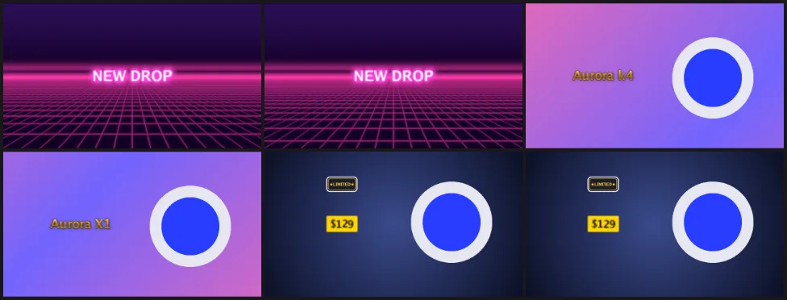

Для ШІ-агентівРецепти4 хв читання
Промо продукту з word art і закадровим голосом
Результат — 9-секундне промо 16:9 у трьох сценах: неоновий заголовок на рухомій сітці, продукт, що падає в кадр поруч із золотим заголовком, і ціна з плашкою «Limited». На склейках — «вжухи» і дзвіночок, закадровий текст читає локальний голос, а на виході — MP4 і зациклений GIF, без жодного стокового відео.
- Час: ~3 хв
- Що потрібно: Фото продукту (найкраще — PNG із прозорістю)
- Основні команди:
media.generate,transition.set,timeline.segment.add,animation.set,text.add,text.apply_effect,text.set_glyph_animation,sticker.add,sfx.add,tts.speak,export.start
Попросіть Claude
Зроби в Kadr 9-секундне промо 16:9 для моїх навушників Aurora X1 з фото C:\Users\you\Pictures\aurora-x1.png. Три сцени по 3 секунди на згенерованих фонах: neon_floor, далі candy_flow, далі midnight_glow, з переходом flash_zoom, а потім cube_turn_left. Сцена 1: «NEW DROP» великим неоново-рожевим word art, літери «вистрибують». З 3-ї секунди — продукт на окремій доріжці праворуч на 60% розміру, падає з відскоком і потім м’яко пливе. Сцена 2: «Aurora X1» золотим металом ліворуч, поява «перемішуванням» літер. Сцена 3: «$129» шаблоном price_tag плюс стікер tag_limited, що вистрибує. Додай швидкий «вжух» перед першою склейкою, дзвіночок на 6 с і «поп», коли з’являється стікер. Закадровий голос з 0,3 с: «Meet Aurora X1. Thirty hours of battery, zero cables. Now just one twenty-nine.» Покажи контактний аркуш, потім експортуй 1080p MP4 і GIF.
Крок за кроком
Кожен крок показує ті самі виклики двічі. Вкладка kadrctl — для PowerShell: рядок, що починається з kadrctl --%, передає JSON, а без --% той самий рядок працює і в командному рядку (cmd). Вкладка MCP — це виклик інструмента, який надсилає агент: назва інструмента та його аргументи. Ідентифікатори на кшталт prj_…, mat_… і seg_… беруться з результатів попередніх кроків, тож у вас вони будуть інші. Шляхи в C:/Users/you — лише приклад.
-
Згенеруйте три фони
media.generateрендерить фони локально і зadd_to_timelineкладе їх на основну доріжку. Безat_usкожен дописується після попереднього.neon_floorіcandy_flow— рухомі MP4;midnight_glow— статичний PNG, і йогоduration_usзадає, скільки він буде на екрані. Рендер іде в розмірі полотна, 1920×1080.kadrctl run project.create --name "Aurora X1 promo" --ratio 16:9 kadrctl run media.generate --project_id prj_acdc53cc560a --preset_id neon_floor --duration_us 3s --add_to_timeline --at_us 0 kadrctl run media.generate --project_id prj_acdc53cc560a --preset_id candy_flow --duration_us 3s --add_to_timeline kadrctl run media.generate --project_id prj_acdc53cc560a --preset_id midnight_glow --duration_us 3s --add_to_timeline{"name": "project_create", "arguments": {"name": "Aurora X1 promo", "ratio": "16:9"}} {"name": "media_generate", "arguments": {"project_id": "prj_acdc53cc560a", "preset_id": "neon_floor", "duration_us": 3000000, "add_to_timeline": true, "at_us": 0}} {"name": "media_generate", "arguments": {"project_id": "prj_acdc53cc560a", "preset_id": "candy_flow", "duration_us": 3000000, "add_to_timeline": true}} {"name": "media_generate", "arguments": {"project_id": "prj_acdc53cc560a", "preset_id": "midnight_glow", "duration_us": 3000000, "add_to_timeline": true}} -
Переходи між сценами
Перехід належить кліпу ліворуч від склейки. Обидва — одним пакетом,
promo-transitions.json:[ {"command": "transition.set", "args": {"segment_id": "seg_d77ee3f2cada", "type": "flash_zoom", "duration_us": 400000}}, {"command": "transition.set", "args": {"segment_id": "seg_20256820e08e", "type": "cube_turn_left", "duration_us": 600000}} ]kadrctl batch prj_acdc53cc560a promo-transitions.json{"name": "kadr_batch", "arguments": {"project_id": "prj_acdc53cc560a", "calls": [ {"command": "transition.set", "args": {"segment_id": "seg_d77ee3f2cada", "type": "flash_zoom", "duration_us": 400000}}, {"command": "transition.set", "args": {"segment_id": "seg_20256820e08e", "type": "cube_turn_left", "duration_us": 600000}} ]}} -
Додайте продукт
Фото лягає на окрему доріжку накладання (
new_track) з 3 до 9 с, зсувається праворуч і зменшується до 60% черезsegment.set_transform, а потім анімується черезanimation.set. Анімація In грає один раз на початку; Loop повторюється весь кліп; їх можна поєднувати.kadrctl --% run media.import --project_id prj_acdc53cc560a --paths "[\"C:/Users/you/Pictures/aurora-x1.png\"]" kadrctl run timeline.segment.add --project_id prj_acdc53cc560a --material_id mat_c0b66ca4c71e --at_us 3s --duration_us 6s --new_track kadrctl run segment.set_transform --project_id prj_acdc53cc560a --segment_id seg_485f2665d091 --x 0.45 --scale 0.6 kadrctl run animation.set --project_id prj_acdc53cc560a --segment_id seg_485f2665d091 --kind in --id in_drop_bounce --duration_us 0.7s kadrctl run animation.set --project_id prj_acdc53cc560a --segment_id seg_485f2665d091 --kind loop --id loop_float --duration_us 2s{"name": "media_import", "arguments": {"project_id": "prj_acdc53cc560a", "paths": ["C:/Users/you/Pictures/aurora-x1.png"]}} {"name": "timeline_segment_add", "arguments": {"project_id": "prj_acdc53cc560a", "material_id": "mat_c0b66ca4c71e", "at_us": 3000000, "duration_us": 6000000, "new_track": true}} {"name": "segment_set_transform", "arguments": {"project_id": "prj_acdc53cc560a", "segment_id": "seg_485f2665d091", "x": 0.45, "scale": 0.6}} {"name": "animation_set", "arguments": {"project_id": "prj_acdc53cc560a", "segment_id": "seg_485f2665d091", "kind": "in", "id": "in_drop_bounce", "duration_us": 700000}} {"name": "animation_set", "arguments": {"project_id": "prj_acdc53cc560a", "segment_id": "seg_485f2665d091", "kind": "loop", "id": "loop_float", "duration_us": 2000000}} -
Заголовки word art
text.addстворює кожен заголовок; об’єктstyleзадає розмір і жирність (це JSON, тому--%).text.apply_effectзастосовує пресет word art:fx_neon_pinkдодає рожевий контур і світіння,fx_gold_metal— металевий градієнт із контуром і тінню; будь-яке значення пресета потім можна змінити черезtext.update.text.set_glyph_animationанімує літери.kadrctl --% run text.add --project_id prj_acdc53cc560a --text "NEW DROP" --at_us 0 --duration_us 3s --style "{\"size\":30,\"bold\":true}" kadrctl run text.apply_effect --project_id prj_acdc53cc560a --segment_id seg_fe621f2a7d99 --effect_id fx_neon_pink kadrctl run text.set_glyph_animation --project_id prj_acdc53cc560a --segment_id seg_fe621f2a7d99 --kind in --id in_letter_pop --duration_us 0.8s kadrctl --% run text.add --project_id prj_acdc53cc560a --text "Aurora X1" --at_us 3s --duration_us 3s --style "{\"size\":26,\"bold\":true}" kadrctl run text.apply_effect --project_id prj_acdc53cc560a --segment_id seg_209bec01faf4 --effect_id fx_gold_metal kadrctl run text.set_glyph_animation --project_id prj_acdc53cc560a --segment_id seg_209bec01faf4 --kind in --id in_scramble --duration_us 0.9s kadrctl run segment.set_transform --project_id prj_acdc53cc560a --segment_id seg_209bec01faf4 --x -0.4{"name": "text_add", "arguments": {"project_id": "prj_acdc53cc560a", "text": "NEW DROP", "at_us": 0, "duration_us": 3000000, "style": {"size": 30, "bold": true}}} {"name": "text_apply_effect", "arguments": {"project_id": "prj_acdc53cc560a", "segment_id": "seg_fe621f2a7d99", "effect_id": "fx_neon_pink"}} {"name": "text_set_glyph_animation", "arguments": {"project_id": "prj_acdc53cc560a", "segment_id": "seg_fe621f2a7d99", "kind": "in", "id": "in_letter_pop", "duration_us": 800000}} {"name": "text_add", "arguments": {"project_id": "prj_acdc53cc560a", "text": "Aurora X1", "at_us": 3000000, "duration_us": 3000000, "style": {"size": 26, "bold": true}}} {"name": "text_apply_effect", "arguments": {"project_id": "prj_acdc53cc560a", "segment_id": "seg_209bec01faf4", "effect_id": "fx_gold_metal"}} {"name": "text_set_glyph_animation", "arguments": {"project_id": "prj_acdc53cc560a", "segment_id": "seg_209bec01faf4", "kind": "in", "id": "in_scramble", "duration_us": 900000}} {"name": "segment_set_transform", "arguments": {"project_id": "prj_acdc53cc560a", "segment_id": "seg_209bec01faf4", "x": -0.4}} -
Ціна і стікер
Текстовий шаблон
price_tagдає ціні готовий вигляд, аtext.updateзбільшує її.sticker.addставить вбудований стікер (типово на 30% полотна), який потім переміщуємо над ціною й анімуємо появою «поп».kadrctl run text.add --project_id prj_acdc53cc560a --text '$129' --template_id price_tag --at_us 6s --duration_us 3s kadrctl run text.update --project_id prj_acdc53cc560a --segment_id seg_c1a659f012cb --size 22 kadrctl run segment.set_transform --project_id prj_acdc53cc560a --segment_id seg_c1a659f012cb --x -0.4 kadrctl run sticker.add --project_id prj_acdc53cc560a --sticker_id tag_limited --at_us 6.3s --duration_us 2.7s kadrctl run segment.set_transform --project_id prj_acdc53cc560a --segment_id seg_15df3c4d2dc0 --x -0.4 --y -0.55 --scale 0.25 kadrctl run animation.set --project_id prj_acdc53cc560a --segment_id seg_15df3c4d2dc0 --kind in --id in_pop{"name": "text_add", "arguments": {"project_id": "prj_acdc53cc560a", "text": "$129", "template_id": "price_tag", "at_us": 6000000, "duration_us": 3000000}} {"name": "text_update", "arguments": {"project_id": "prj_acdc53cc560a", "segment_id": "seg_c1a659f012cb", "size": 22}} {"name": "segment_set_transform", "arguments": {"project_id": "prj_acdc53cc560a", "segment_id": "seg_c1a659f012cb", "x": -0.4}} {"name": "sticker_add", "arguments": {"project_id": "prj_acdc53cc560a", "sticker_id": "tag_limited", "at_us": 6300000, "duration_us": 2700000}} {"name": "segment_set_transform", "arguments": {"project_id": "prj_acdc53cc560a", "segment_id": "seg_15df3c4d2dc0", "x": -0.4, "y": -0.55, "scale": 0.25}} {"name": "animation_set", "arguments": {"project_id": "prj_acdc53cc560a", "segment_id": "seg_15df3c4d2dc0", "kind": "in", "id": "in_pop"}}У PowerShell
$усередині подвійних лапок починає змінну, тож"$129"перетворюється на порожній рядок. Беріть текст із$в одинарні лапки, як вище. У командному рядку (cmd) — подвійні лапки. У викликах MCP і REST такої проблеми немає. -
Звукові ефекти й закадровий голос
sfx.addставить один із власних синтезованих звукових ефектів Kadr; «вжух», що має припасти на склейку, починається трохи раніше.tts.speakчитає текст голосом, встановленим на вашому ПК (Windows SAPI або eSpeak NG;en-USвибирає англійський голос), вирівнює його приблизно до −16 LUFS і кладе на окрему аудіодоріжку.kadrctl run sfx.add --project_id prj_acdc53cc560a --sfx_id whoosh_fast --at_us 2.8s kadrctl run sfx.add --project_id prj_acdc53cc560a --sfx_id ding --at_us 6s kadrctl run sfx.add --project_id prj_acdc53cc560a --sfx_id pop_bubble --at_us 6.3s kadrctl run tts.speak --project_id prj_acdc53cc560a --text "Meet Aurora X1. Thirty hours of battery, zero cables. Now just one twenty-nine." --voice en-US --at_us 0.3s{"name": "sfx_add", "arguments": {"project_id": "prj_acdc53cc560a", "sfx_id": "whoosh_fast", "at_us": 2800000}} {"name": "sfx_add", "arguments": {"project_id": "prj_acdc53cc560a", "sfx_id": "ding", "at_us": 6000000}} {"name": "sfx_add", "arguments": {"project_id": "prj_acdc53cc560a", "sfx_id": "pop_bubble", "at_us": 6300000}} {"name": "tts_speak", "arguments": {"project_id": "prj_acdc53cc560a", "text": "Meet Aurora X1. Thirty hours of battery, zero cables. Now just one twenty-nine.", "voice": "en-US", "at_us": 300000}}З голосом
sapi:Microsoft Zira Desktopзакадровий текст триває 7,25 с, тож вміщається.tts.voicesпоказує всі доступні голоси — зокрема голоси ElevenLabs післяtts.set_api_key(див. рецепт документалки). -
Перевірте й експортуйте MP4 і GIF
Експорт у GIF обмежений 15 кадр/с і 720 px по довшій стороні, зациклюється без кінця й не має звуку. Експорти виконуються по черзі; другий чекає в стані
queued.kadrctl run preview.contact_sheet --project_id prj_acdc53cc560a --count 6 --columns 3 --tile_width 320 kadrctl run export.start --project_id prj_acdc53cc560a --resolution 1080p --path C:/Users/you/Videos/Kadr/aurora-x1-promo.mp4 kadrctl run export.start --project_id prj_acdc53cc560a --gif --path C:/Users/you/Videos/Kadr/aurora-x1-promo.gif{"name": "preview_contact_sheet", "arguments": {"project_id": "prj_acdc53cc560a", "count": 6, "columns": 3, "tile_width": 320}} {"name": "export_start", "arguments": {"project_id": "prj_acdc53cc560a", "resolution": "1080p", "path": "C:/Users/you/Videos/Kadr/aurora-x1-promo.mp4"}} {"name": "export_start", "arguments": {"project_id": "prj_acdc53cc560a", "gif": true, "path": "C:/Users/you/Videos/Kadr/aurora-x1-promo.gif"}}
Контактний аркуш, на який агент дивиться перед експортом, — плитка 3 ловить заголовок посеред «перемішування». Зображення продукту — замінник.
Варіації
- Фото продукту з фоном.
ai.remove_backgroundвирізає продукт локально, якщо встановленоrembgабоonnxruntimeз моделлю матування — спершу перевірте черезai.capabilities. - Озвучити заголовок.
tts.from_textчитає текстовий кліп і зв’язує з ним мову; зsync_durationдовжина тексту підганяється під мову. - Вертикальна реклама. Візьміть 9:16 і розташуйте елементи один над одним: продукт на
y−0.3, заголовок наy0.45. - Повторне використання стилю.
presets.saveзkindtext_styleзберігає неоновий заголовок у «Мій набір»;presets.applyзастосовує його до будь-якого тексту в будь-якому проєкті. - Відлік на початку. Пресет
countdown_3уmedia.generateдодає інтро «3-2-1».
Поради
library.listзkindtext_effectпоказує пресети word art,text_animation— анімації літер,sticker— стікери,sound_effect— звуки. У кожного елемента є URLthumbnail, який відкривається з токеном.- Для коротшого GIF додайте
range_end_us(наприклад, 3000000), щоб експортувати лише першу сцену.